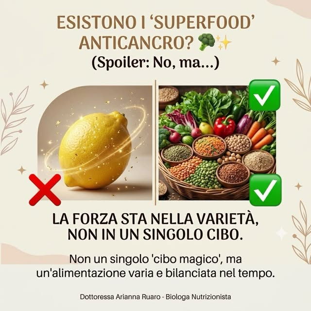
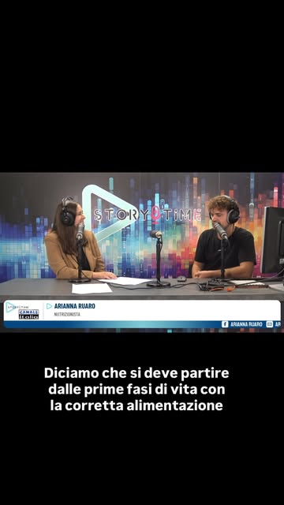
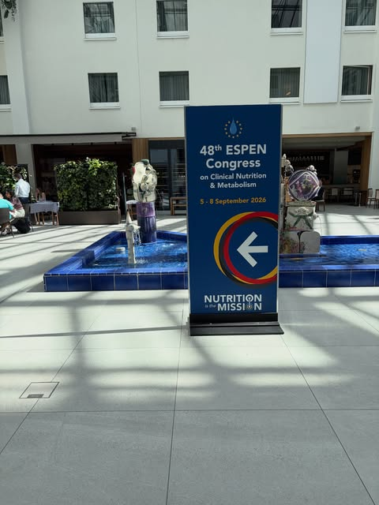
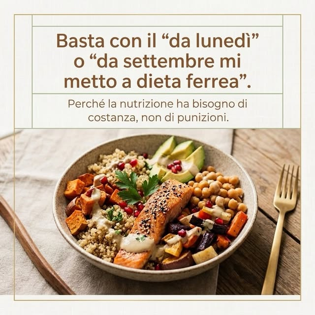
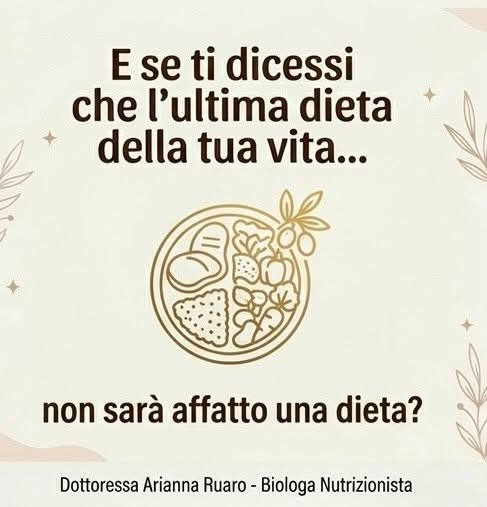
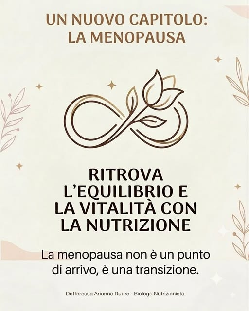
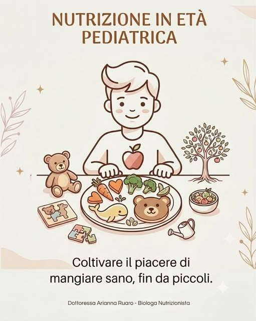
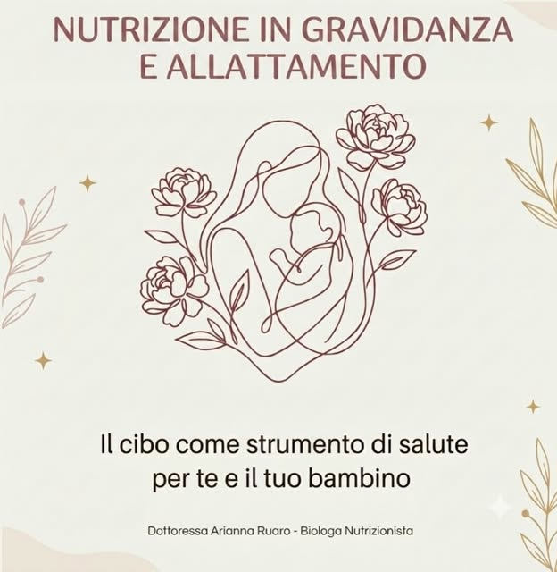
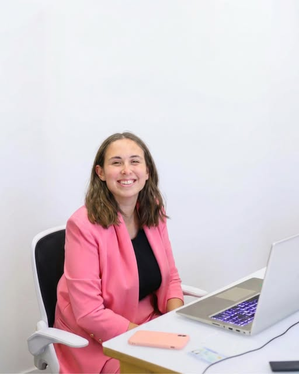

55 × 85 mm, cartoncino opaco, angoli vivi. La fragola è un timbro a secco: rilievo senza inchiostro, sempre del colore della carta. Trascina o tocca per girarlo.
Un neutro chiaro, un neutro scuro e tre coppie colore: ogni coppia ha un pieno e un chiaro e si usa sempre da sola, senza mescolarsi con le altre. Fanno eccezione i frutti e le illustrazioni, che possono usare tutta la tavolozza. Due versioni di carattere, tutta serif (Petrona) o tutta sans (Geologica), sempre in pesi leggeri. Tre versioni di colore sugli stessi post.
Tre versioni
Dal 2025 la griglia del profilo mostra i post in 3:4: per questo tutti i post sono ora 1080×1440, e nella griglia non si taglia niente. I post si pubblicano sempre in sequenza di tre, foto → scheda piena → scheda chiara: quando la griglia slitta di uno a ogni nuovo post, le colonne restano ordinate. Tre post fissati in alto fanno da presentazione.
Biologa nutrizionista · Vicenza e Valdagno
Educazione alimentare basata sulle evidenze. Niente diete, più autonomia.
Prima visita: scrivimi in DM
Fissati in alto
Chi sono, l'apertura della serie "Mito o evidenza?" e il congresso ESPEN. Si cambiano di rado: dicono chi è, cosa fa e perché fidarsi.
Storie in evidenza
Cinque cerchi, ognuno nel chiaro di una coppia con un frutto: Chi sono, Visite, Miti, Fasi della vita, Congresso.
Le tre colonne
Colonna di sinistra: foto. Centro: scheda piena o scura. Destra: scheda chiara o neutra, con dati e passi. Postando sempre in quest'ordine, la griglia resta a colonne anche quando slitta.
Bio
Chi è, dove riceve, cosa promette, cosa fare: in quattro righe, senza emoji. Il link va alla prenotazione.
Da sostituire
Il numero dei seguiti, il link e la foto profilo (oggi ritagliata dal post del blazer rosa).
Tipografia
Versione serif · Petrona
Mito o evidenza? Le uova e il colesterolo.
Serif morbida e calda, con un disegno un po' artigianale ma leggibile: titoli in 300, testo in 350–400, etichette in 500. Seria senza essere fredda.
Versione sans · Geologica
Mito o evidenza? Le uova e il colesterolo.
Sans dal disegno tecnico ma con angoli morbidi: titoli in 300, testo in 350–400, etichette in 500. Pulita e moderna.
Frutti e verdure · ricolorati per la versione
Formato 3:4 (1080×1440), una coppia colore per post. Foto Unsplash caricate dal loro sito, segnaposto per la foto di Arianna fino allo shooting. Testi in bozza da far rivedere ad Arianna.
Mito o evidenza?
Ogni settimana un mito sul cibo, smontato con le fonti. Senza sensi di colpa.
La serie · 1 di 12
I superfood non esistono.
Nessun cibo fa miracoli da solo. Conta quello che mangi ogni giorno, nel suo insieme.
Frutta e verdura nella tua settimana
Porzioni al giorno, obiettivo 5.
Fonte: CREA, Linee guida per una sana alimentazione, 2018
Menopausa: cosa cambia davvero a tavola.
Nessun alimento da solo protegge dal cancro. Conta il modello alimentare.
Fonte: World Cancer Research Fund, Third Expert Report, 2018
Hai bevuto abbastanza oggi?
Circa 2 litri al giorno per una donna adulta, cibo compreso
Fonte: EFSA, valori di riferimento per l'acqua, 2010
Leggere l'etichetta in tre mosse.
Fonte: Regolamento UE 1169/2011
Uova e colesterolo: 2–4 a settimana vanno bene per la maggior parte delle persone.
Fonte: CREA, Linee guida 2018
Movimento
150min
a settimana di attività moderata, per gli adulti.
Fonte: OMS, Linee guida su attività fisica, 2020
Il gusto si educa, dai primi anni.
La vitamina C non previene il raffreddore nella popolazione generale.
Fonte: Hemilä e Chalker, Cochrane, 2013
Arianna Ruaro, biologa nutrizionista. Vicenza e Valdagno.
I nove post pubblicati, stessi temi e stesse foto sue, nel nuovo sistema. Via le immagini generate con l'AI, le line-art e le emoji: al loro posto frutti a ritaglio, foto vere e una fonte quando c'è un'affermazione. Testi corretti e a "tu". Sotto ogni post, l'originale.
Esistono i superfood anticancro?
Spoiler: no. La forza sta nella varietà, non in un singolo cibo.
un cibo
tanti cibi, nel tempo
Fonte: World Cancer Research Fund, 2018

«Si deve partire dalle prime fasi di vita, con la corretta alimentazione.»
Arianna a Story Time, Canale Italia

Il mio poster al 48° congresso ESPEN.
Nutrizione clinica e metabolismo, Berlino, 5–8 settembre 2026.

Basta con «da lunedì mi metto a dieta».
La nutrizione ha bisogno di costanza, non di punizioni.
Un po' ogni giorno, anche il weekend.

E se l'ultima dieta della tua vita non fosse affatto una dieta?
Un modo di mangiare che puoi tenere per sempre.

Menopausa: un nuovo capitolo, non un punto di arrivo.
Cosa cambia davvero a tavola, in una serie di post.

Età pediatrica: il piacere di mangiare bene si coltiva da piccoli.

Gravidanza e allattamento: il cibo come strumento di salute, per te e per il tuo bambino.

Ciao, sono Arianna.
Biologa nutrizionista a Vicenza e Valdagno. Il mio obiettivo più grande: la tua autonomia a tavola.
